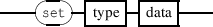
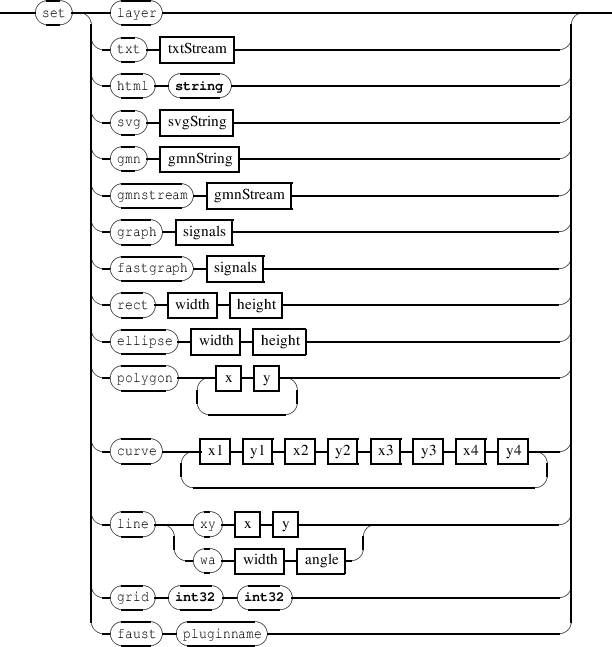

Chapter 3
Time management messages
Time messages control the time dimension of the score components. They could be sent to any address with the
form /ITL/scene/identifier where identifier is the unique identifier string of a scene
component.
-
-
timeMsg 
-
-
time 
- 1) Time is specified as a rational value d/n where 1/1 represents a whole note.
- 2) Time may be specified with a single integer, then 1 is used as implicit denominator value.
- 3) Time may be specified as a single float value that is converted using the following approximation:
let f be the floating point date, the corresponding rational date is computed as f x 10000 / 10000.
- 4) Time may also be specified as a string in the form ’n/d’.
- clock: similar to MIDI clock message: advances the object date by 1/24 of quarter note.
- durClock: a clock message applied to duration: increases the object duration by 1/24 of quarter note.
- date: sets the time position of an object. Default value is 0/1.
- duration: changes the object duration. Default value is 1/1.
- ddate: relative time positioning message: adds the specified value to the object date.
- dduration: relative duration message: adds the specified value to the object duration.
EXAMPLE
Various ways to set an object date.
/ITL/scene/myObject date 2 1 ;
/ITL/scene/myObject date 2; // the denominator is 1 (implied)
/ITL/scene/myObject date 0.5; // equivalent to 1/2
/ITL/scene/myObject date ’1/2’; // the string form
Similar ways to move an object date.
/ITL/scene/myObject clock;
/ITL/scene/myObject ddate ’1/96’;